Сфера.Архитектура
Набор инструментов для создания архитектуры на разных уровнях, от корпоративной архитектуры до архитектуры конкретных сервисов, компонентов и процессов.
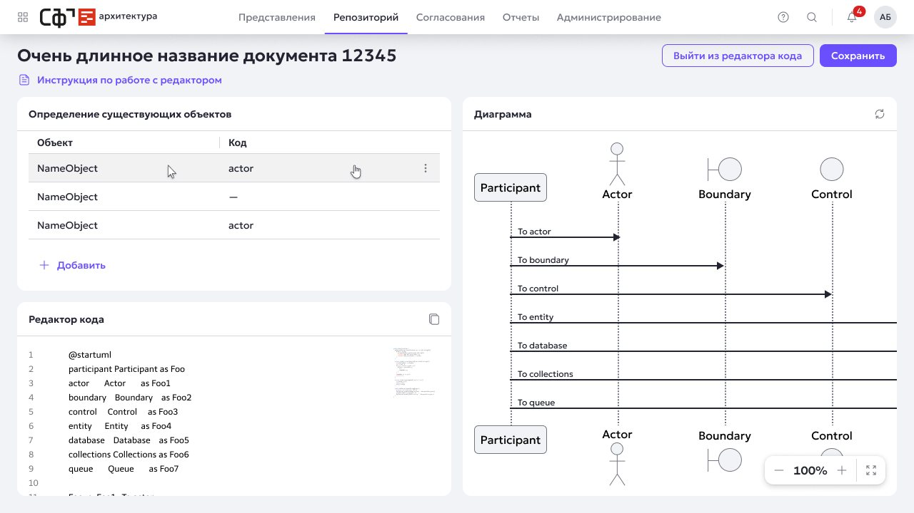
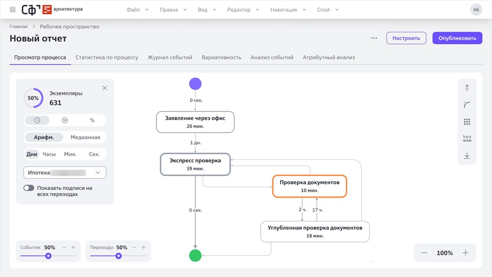
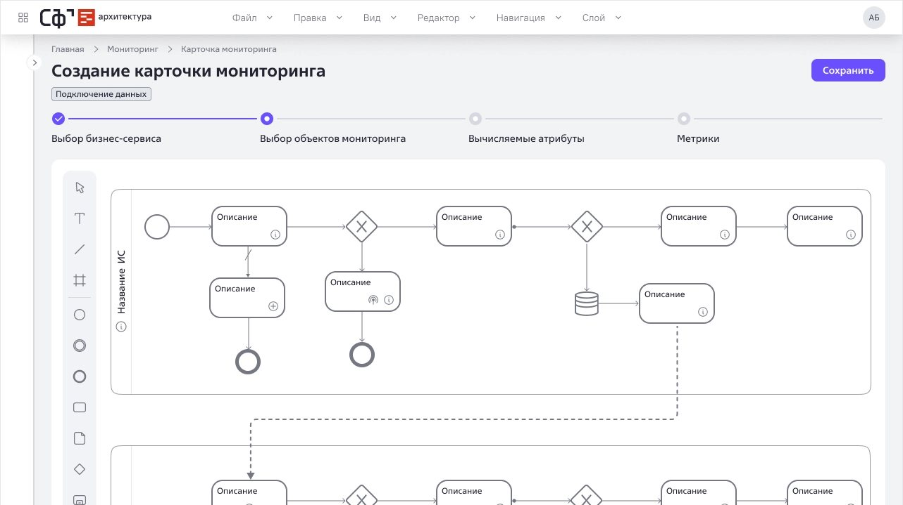
Задачи:
Банку был необходим отечественный инструмент для совместной работы с архитектурой в различных областях, включая архитектуру предприятия, системную архитектуру, управление и оптимизацию бизнес-процессов и т. д., полностью замещающий зарубежные аналоги. Продукт включает в себя два модуля: архитектура и архитектура данных. К моему приходу на роль дизайн-лида был проработан MVP, который во многом не удовлетворял стейкхолдеров:
- Согласно метрикам и обратной связи от пользователей, существовал ряд критичных проблем юзабилити, которые необходимо было решить;
- Неоднородный интерфейс, замедляющий работу пользователей;
- Отсутствовала практика проверки разрабатываемых решений на пользователях;
- Отсутствовал формализованный процесс фронт-ревью;
- Большой накопленный тех- и дизайн-долг.
Кейс #1
Устранение дизайн-долга
Продукт «Архитектура» долгое время развивался изолированно, накопив огромный техдолг и дизайн-долг. Интерфейс разошёлся с общей дизайн-системой платформы, из-за чего пользователи теряли консистентность между продуктами (wiki, документы, согласования) и испытывали трудности с навигацией.
Ключевой экран — работа с репозиторием архитектурных артефактов — страдал от множества расхождений:
- Левый навигационный сайдбар с деревом репозиториев не соответствовал паттернам дизайн-системы. Время на ориентацию в репозитории было на 35% выше, чем на аналогичных экранах wiki.
- На странице не было хедера и хлебных крошек — пользователи теряли контекст, не понимали, где находятся внутри иерархии репозитория.
- Интерфейс работы с выбранным элементом был собран из разрозненных компонентов, не унифицированных с другими продуктами платформы.

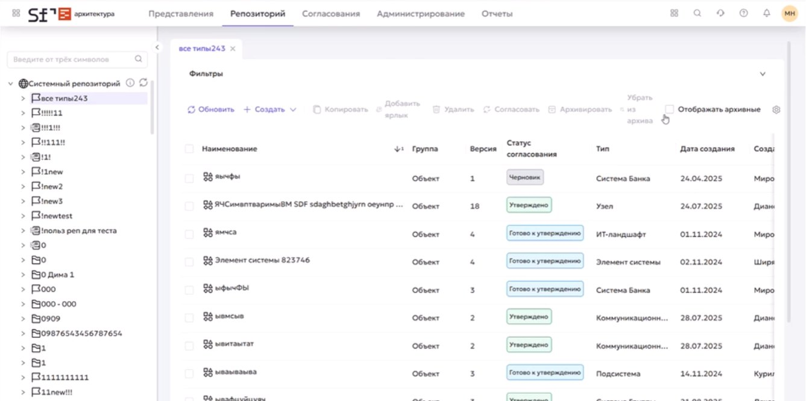
Посмотреть как было← до редизайна
Мы провели редизайн ключевого экрана репозитория, приведя его к единым паттернам дизайн-системы:
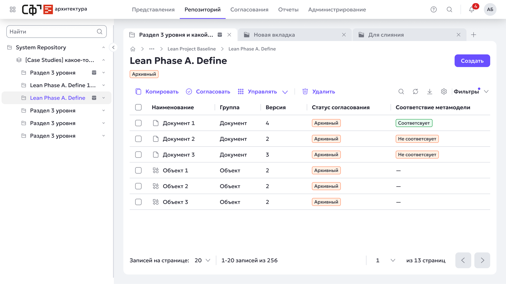
В результате соответствие дизайн-системе выросло с 42% до 88%, а время ориентации в репозитории сократилось на 57%.
Кейс #2
Добавление функционала комментариев
Продукт «Архитектура» включает редактор BPMN-диаграмм, который используется для моделирования бизнес-процессов, сервисов и компонентов. Диаграммы часто создаются и дорабатываются командами, но долгое время в редакторе отсутствовала возможность оставлять комментарии прямо на диаграмме. Вся обратная связь собиралась в мессенджерах, почте или на устных встречах, терялась привязка к актуальной версии диаграммы, что приводило к потере контекста и затягивало цикл согласования.
Мы добавили в редактор BPMN-диаграмм возможность комментировать элементы и общаться прямо на диаграмме.
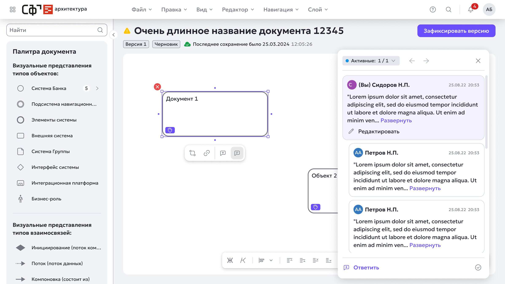
Проработали все состояния и сценарии инлайн-комментариев в виде универсального паттерна, который теперь переиспользуется в других продуктах платформы.
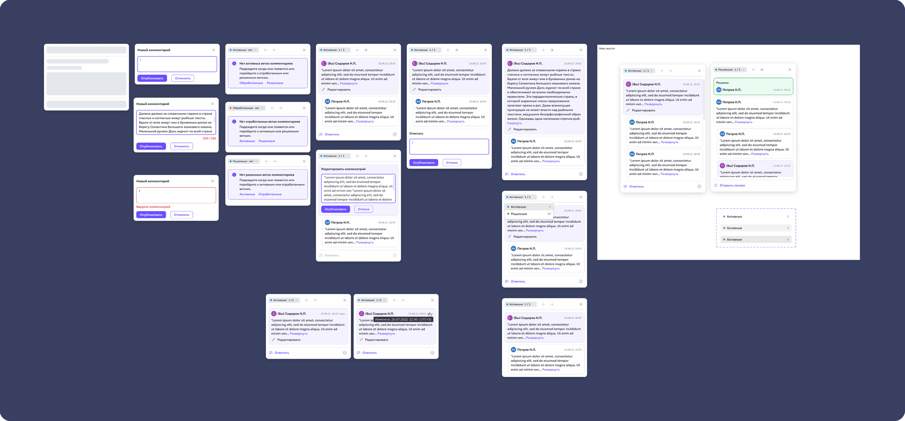
Кейс #3
Нормализация BPMN-схем
В продукте «Архитектура» пользователи строят сложные BPMN-диаграммы, описывающие бизнес-процессы, сервисные ландшафты и компоненты. Со временем схемы неизбежно «разрастались»: элементы хаотично разбросаны по холсту, связи пересекаются, визуальная читаемость падает. Не было инструмента для автоматического выравнивания — только ручное перетаскивание и «глазомер». При доработках схемы хаос накапливался, и исправлять становилось сложнее, чем создать новую. Ручная «уборка» отнимала часы и отвлекала архитекторов от содержательной работы.
Мы сделали функцию «сделать красиво»: спроектировали нормализацию схем — автоматическое приведение диаграммы к читаемому виду:
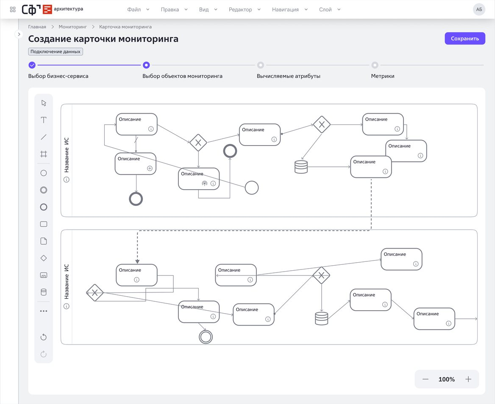
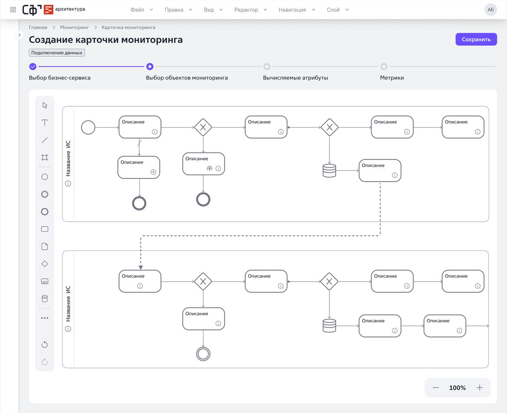
Проработана верхнеуровневая архитектура
с базовой функциональностью
Определены проблемные точки, сформирован беклог на дизайн-задачи и дизайн-долг. Выстроенные процессы позволяют валидировать решения на предмет оптимального пользовательского пути и корректной реализации.
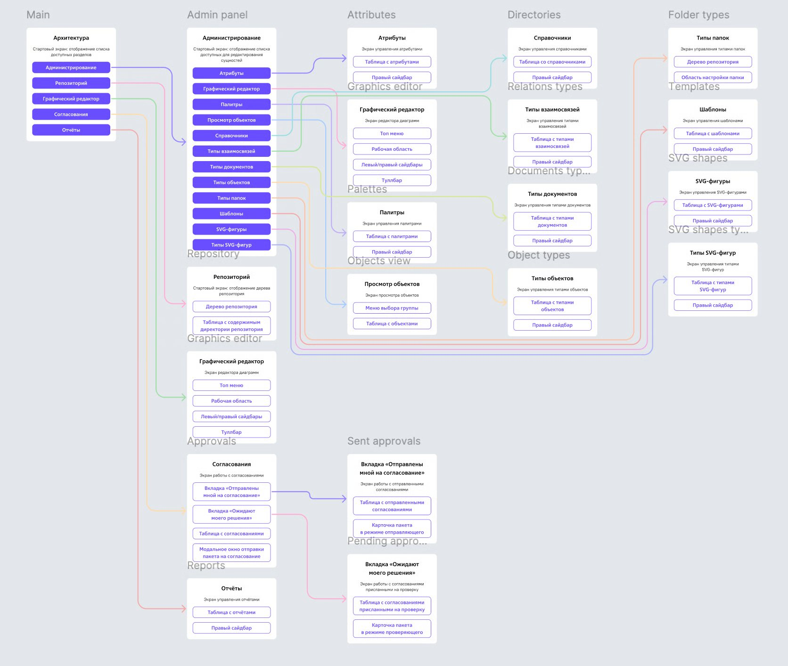
Спроектированы интерфейсы с учётом требований дизайн-системы платформы, технических ограничений, бизнес-требований, а также с учётом прошлого опыта пользователей:
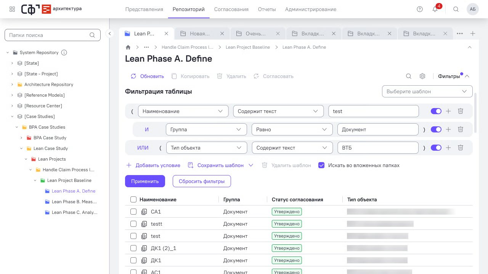
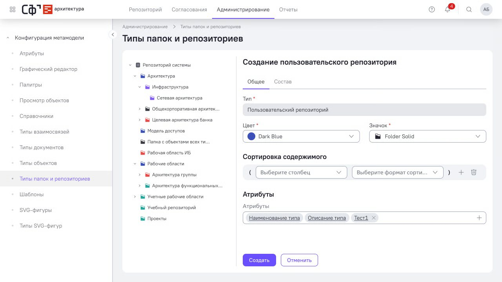
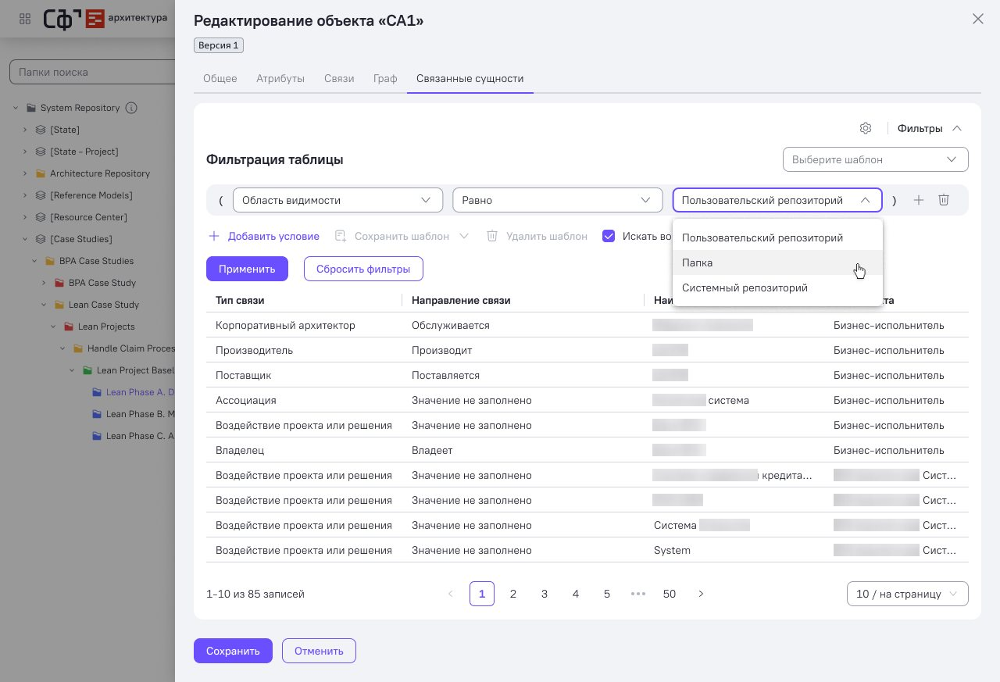
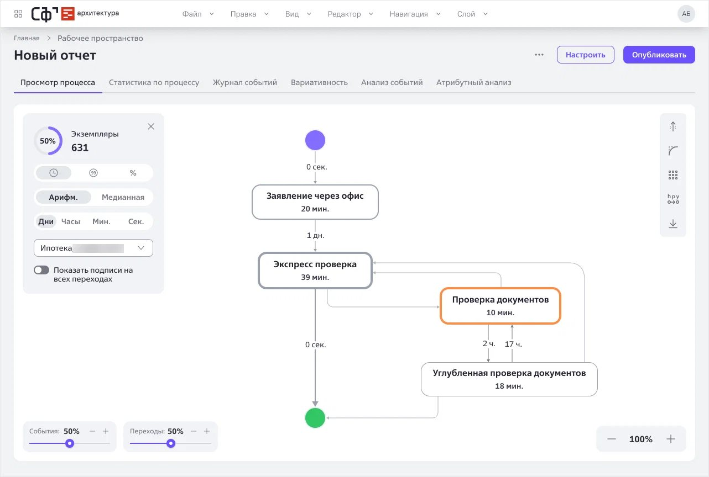
Общие метрики удовлетворённости пользователей стабильно растут:
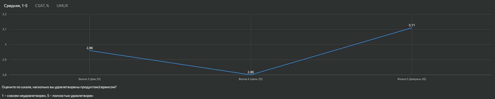
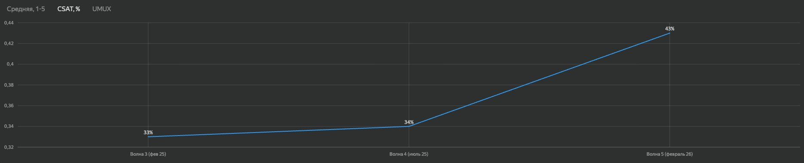
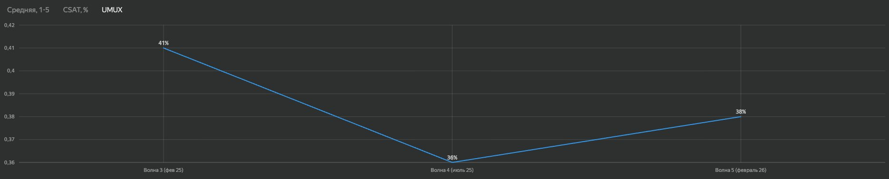
база знаний для хранения реализованных API.